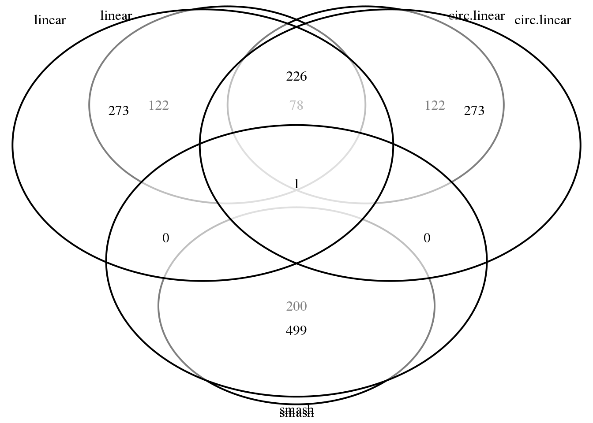

Last updated: 2018-03-14
Code version: 302b4d3
In terms of the enrichment for cell cycle genes found in Whitfield paper, the top 200 genes in linear correlation case has 5 fold enrichment, while the top 200 genes in circular-linear correlation case has 6.9 fold enrichment. When considering the top 100 genes, the linear correlation has 6.5 fold enrichment, and the circular-linear correlation has 9.4 fold enrichment.
Packages
library(circular)
library(conicfit)
library(Biobase)
library(dplyr)
library(matrixStats)
library(smashr)
library(NPCirc)
library(CorShrink)Load data
df <- readRDS(file="../data/eset-filtered.rds")
pdata <- pData(df)
fdata <- fData(df)
# select endogeneous genes
counts <- exprs(df)[grep("ENSG", rownames(df)), ]
log2cpm.all <- readRDS("../output/seqdata-batch-correction.Rmd/log2cpm.rds")
# log2cpm.adjust <- readRDS("../output/seqdata-batch-correction.Rmd/log2cpm.adjust.rds")
log2cpm <- log2cpm.all[grep("ENSG", rownames(log2cpm.all)), ]
# import corrected intensities
pdata.adj <- readRDS("../output/images-normalize-anova.Rmd/pdata.adj.rds")
macosko <- readRDS("../data/cellcycle-genes-previous-studies/rds/macosko-2015.rds")
source("../code/images-circle-ordering-npreg.R")pc.fucci <- prcomp(subset(pdata.adj,
select=c("rfp.median.log10sum.adjust",
"gfp.median.log10sum.adjust")),
center = T, scale. = T)
library(circular)
Theta.fucci <- coord2rad(pc.fucci$x)
log2cpm.ordered <- log2cpm[,order(as.numeric(Theta.fucci))]
Theta.fucci.ordered <- Theta.fucci[order(as.numeric(Theta.fucci))]–
cors <- sapply(1:nrow(log2cpm), function(g) {
cor(Theta.fucci, log2cpm[g,])
})
nsamp.nonzero <- rowSums(log2cpm>0)
cors.shrink <- CorShrinkVector(cors, nsamp.nonzero, report_model = TRUE)
out.cors <- with(cors.shrink$model$result, data.frame(PosteriorMean, svalue))
rownames(out.cors) <- rownames(log2cpm)
out.cors.nosig <- out.cors[out.cors$svalue > .01,]
out.cors.sig <- out.cors[out.cors$svalue < .01,]
out.cors.sig.sorted <- out.cors.sig[order(out.cors.sig$svalue),]
# check macosko genes enrichment
mean(rownames(out.cors.sig) %in% macosko$ensembl)/mean(rownames(out.cors.nosig) %in% macosko$ensembl)[1] 5.528023mean((rownames(out.cors)[order(out.cors$svalue)])[1:200] %in% macosko$ensembl)/mean((rownames(out.cors)[order(out.cors$svalue)])[200:nrow(out.cors)] %in% macosko$ensembl)[1] 4.925439mean((rownames(out.cors)[order(out.cors$svalue)])[1:100] %in% macosko$ensembl)/mean((rownames(out.cors)[order(out.cors$svalue)])[100:nrow(out.cors)] %in% macosko$ensembl)[1] 6.508723Save output.
write.table((rownames(out.cors)[order(out.cors$svalue)])[1:200],
row.names = F, col.names = F, quote = F,
file = "../output/images-circle-ordering-sigcorgenes.Rmd/position.expression.lin.top200.txt")library(Directional)
cors.circlin <- sapply(1:nrow(log2cpm), function(g) {
sqrt(circlin.cor(Theta.fucci, log2cpm[g,])[1])
})
nsamp.nonzero <- rowSums(log2cpm>0)
cors.circlin.shrink <- CorShrinkVector(cors.circlin, nsamp.nonzero, report_model = TRUE)
out.cors.circlin <- with(cors.circlin.shrink$model$result, data.frame(PosteriorMean, svalue))
rownames(out.cors.circlin) <- rownames(log2cpm)
out.cors.circlin.nosig <- out.cors.circlin[out.cors.circlin$svalue > .01,]
out.cors.circlin.sig <- out.cors.circlin[out.cors.circlin$svalue < .01,]
out.cors.circlin.sig.sorted <- out.cors.circlin[order(out.cors.circlin$svalue),]
# check macosko genes enrichment
mean(rownames(out.cors.circlin.sig) %in% macosko$ensembl)/mean(rownames(out.cors.circlin.nosig) %in% macosko$ensembl)[1] 3.266438mean((rownames(out.cors.circlin)[order(out.cors.circlin$svalue)])[1:200] %in% macosko$ensembl)/mean((rownames(out.cors.circlin)[order(out.cors.circlin$svalue)])[200:nrow(out.cors.circlin)] %in% macosko$ensembl)[1] 3.486831mean((rownames(out.cors.circlin)[order(out.cors.circlin$svalue)])[1:100] %in% macosko$ensembl)/mean((rownames(out.cors.circlin)[order(out.cors.circlin$svalue)])[100:nrow(out.cors.circlin)] %in% macosko$ensembl)[1] 4.760504Save output.
write.table((rownames(out.cors.circlin)[order(out.cors.circlin$svalue)])[1:200],
row.names = F, col.names = F, quote = F,
file = "../output/images-circle-ordering-sigcorgenes.Rmd/position.expression.cir.lin.top200.txt")partitions <- partitionSamples.n(c(1:length(Theta.fucci)), 1, c(512,400))$partitions
indices.train <- partitions[[1]][[1]]
Y.train <- Theta.fucci.ordered[indices.train]
X.train <- log2cpm.ordered[,indices.train]
out.smash <- mclapply(1:nrow(log2cpm), function(g) {
xx.train <- X.train[g,]
is.zeros <- which(xx.train == 0)
not.zeros <- which(xx.train != 0)
xx.train.impute <- xx.train
if (length(is.zeros) > 1) {
for (j in 1:length(is.zeros)) {
pos <- is.zeros[j]
if (pos == 1) {impute.val <- xx.train[pos+1]}
if (pos == length(xx.train.impute)) {impute.val <- xx.train[pos-1]}
if (pos > 1 & pos < length(xx.train.impute)) {
impute.val <- min(xx.train[not.zeros], na.rm=T) }
xx.train.impute[pos] <- impute.val
}
} else { xx.train.impute <- xx.train}
fit.smash.xx <- smash(x = xx.train.impute)
pve <- 1- var(xx.train.impute-fit.smash.xx)/var(xx.train.impute)
return(list(xx.smash=fit.smash.xx,
xx.train.impute = xx.train.impute,
pve=pve))
}, mc.cores=10) out.smash.fit <- do.call(rbind, lapply(out.smash, "[[", 1))
rownames(out.smash.fit) <- rownames(log2cpm)
out.smash.traindata <- do.call(rbind, lapply(out.smash, "[[", 2))
rownames(out.smash.traindata) <- rownames(log2cpm)
out.smash.pve <- sapply(out.smash, "[[", 3)
names(out.smash.pve) <- rownames(log2cpm)Save output.
saveRDS(out.smash.pve, file = "../output/images-circle-ordering-sigcorgenes.Rmd/out.smash.pve.rds")
saveRDS(out.smash.traindata,
file = "../output/images-circle-ordering-sigcorgenes.Rmd/out.smash.traindata.rds")
saveRDS(out.smash.fit, file = "../output/images-circle-ordering-sigcorgenes.Rmd/out.smash.fit.rds")
write.table(names(out.smash.pve)[out.smash.pve > .5],
row.names = F, col.names = F, quote = F,
file = "../output/images-circle-ordering-sigcorgenes.Rmd/expression.smash.txt")out.smash.pve <- readRDS("../output/images-circle-ordering-sigcorgenes.Rmd/out.smash.pve.rds")
out.smash.cyclical <- which(out.smash.pve > .1)
out.smash.notcyclical <- which(out.smash.pve < .1)
mean(names(out.smash.pve)[out.smash.pve > .5] %in% macosko$ensembl)/mean(names(out.smash.pve)[out.smash.pve < .5] %in% macosko$ensembl) [1] 0.08888094library(Directional)
cors.circlin <- sapply(1:nrow(log2cpm), function(g) {
sqrt(circlin.cor(Theta.fucci, log2cpm[g,])[1])
})
nsamp.nonzero <- rowSums(log2cpm>0)
cors.circlin.shrink <- CorShrinkVector(cors.circlin, nsamp.nonzero, report_model = TRUE)
out.cors.circlin <- with(cors.circlin.shrink$model$result, data.frame(PosteriorMean, svalue))
rownames(out.cors.circlin) <- rownames(log2cpm)
out.cors.circlin.nosig <- out.cors.circlin[out.cors.circlin$svalue > .001,]
out.cors.circlin.sig <- out.cors.circlin[out.cors.circlin$svalue < .001,]
out.cors.circlin.sig.sorted <- out.cors.circlin[order(out.cors.circlin$svalue),]
# check macosko genes enrichment
mean(rownames(out.cors.circlin.sig) %in% macosko$ensembl)/mean(rownames(out.cors.circlin.nosig) %in% macosko$ensembl)[1] 3.095129Save output.
write.table(out.cors.circlin.sig.sorted, row.names = F, col.names = F, quote = F,
file = "../output/images-circle-ordering-sigcorgenes.Rmd/position.expression.cir.lin.siggenes.txt")library(VennDiagram)
grid.draw(venn.diagram(list(linear=(rownames(out.cors)[order(out.cors$svalue)])[1:200],
circ.linear=(rownames(out.cors.circlin)[order(out.cors.circlin$svalue)])[1:200],
smash=(names(out.smash.pve)[order(out.smash.pve, decreasing = T)])[1:200]),
filename = NULL))
grid.draw(venn.diagram(list(linear=(rownames(out.cors)[order(out.cors$svalue)])[1:500],
circ.linear=(rownames(out.cors.circlin)[order(out.cors.circlin$svalue)])[1:500],
smash=(names(out.smash.pve)[order(out.smash.pve, decreasing = T)])[1:500]),
filename = NULL))
sessionInfo()R version 3.4.1 (2017-06-30)
Platform: x86_64-redhat-linux-gnu (64-bit)
Running under: Scientific Linux 7.2 (Nitrogen)
Matrix products: default
BLAS/LAPACK: /usr/lib64/R/lib/libRblas.so
locale:
[1] LC_CTYPE=en_US.UTF-8 LC_NUMERIC=C
[3] LC_TIME=en_US.UTF-8 LC_COLLATE=en_US.UTF-8
[5] LC_MONETARY=en_US.UTF-8 LC_MESSAGES=en_US.UTF-8
[7] LC_PAPER=en_US.UTF-8 LC_NAME=C
[9] LC_ADDRESS=C LC_TELEPHONE=C
[11] LC_MEASUREMENT=en_US.UTF-8 LC_IDENTIFICATION=C
attached base packages:
[1] grid parallel stats graphics grDevices utils datasets
[8] methods base
other attached packages:
[1] VennDiagram_1.6.19 futile.logger_1.4.3 Directional_3.0
[4] CorShrink_0.1.1 NPCirc_2.0.1 smashr_1.0.5
[7] caTools_1.17.1 data.table_1.10.4-3 Matrix_1.2-10
[10] wavethresh_4.6.8 MASS_7.3-47 ashr_2.2-7
[13] Rcpp_0.12.16 matrixStats_0.53.1 dplyr_0.7.4
[16] Biobase_2.38.0 BiocGenerics_0.24.0 conicfit_1.0.4
[19] geigen_2.1 pracma_2.1.4 circular_0.4-93
loaded via a namespace (and not attached):
[1] mvtnorm_1.0-7 lattice_0.20-35 assertthat_0.2.0
[4] rprojroot_1.3-2 digest_0.6.15 foreach_1.4.4
[7] mime_0.5 truncnorm_1.0-8 slam_0.1-42
[10] R6_2.2.2 plyr_1.8.4 futile.options_1.0.0
[13] backports_1.1.2 RcppZiggurat_0.1.4 evaluate_0.10.1
[16] pillar_1.2.1 rlang_0.2.0 pscl_1.5.2
[19] misc3d_0.8-4 rmarkdown_1.9 stringr_1.3.0
[22] htmlwidgets_1.0 shiny_1.0.5 compiler_3.4.1
[25] httpuv_1.3.6.2 pkgconfig_2.0.1 SQUAREM_2017.10-1
[28] shape_1.4.4 htmltools_0.3.6 tibble_1.4.2
[31] codetools_0.2-15 bitops_1.0-6 jsonlite_1.5
[34] xtable_1.8-2 git2r_0.21.0 magrittr_1.5
[37] Rfast_1.8.8 stringi_1.1.7 reshape2_1.4.3
[40] doParallel_1.0.11 bindrcpp_0.2 boot_1.3-19
[43] lambda.r_1.2 iterators_1.0.9 tools_3.4.1
[46] glue_1.2.0 movMF_0.2-2 crosstalk_1.0.0
[49] plotrix_3.7 yaml_2.1.18 knitr_1.20
[52] bindr_0.1.1 This R Markdown site was created with workflowr